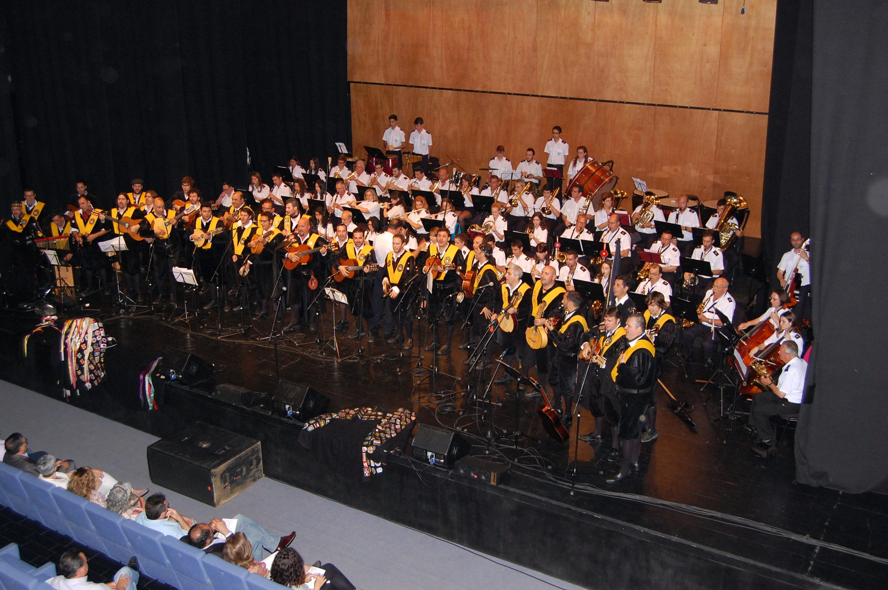
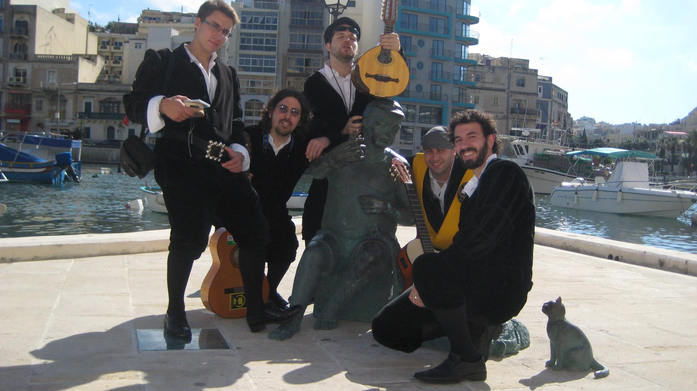

2023 - ACTUACION EN EL XVI CERTAMEN INTERNACIONAL DE TUNAS VILLA DE LOPERA (JAEN)
Ver actuación
2023 - RONDA EN EL XVI CERTAMEN INTERNACIONAL DE TUNAS VILLA DE LOPERA (JAEN)
Ver actuación
2023 - ACTUACION EN EL VII CERTAMEN INTERNACIONAL DE TUNAS SANTA CRUZ DE TENERIFE
Ver actuación
2023 - RONDA EN EL VII CERTAMEN INTERNACIONAL DE TUNAS SANTA CRUZ DE TENERIFE
Ver actuación
2023 - ACTUACION EN LA XXXIV EDICION DEL CERTAMEN INTERNACIONAL DE TUNAS COSTA CALIDA - CIUDAD DE
MURCIA (GALA DE CLAUSURA) EN LA PERGOLA DE SAN BASILIO
Ver actuación
2023 - ACTUACION EN LA XXXIV EDICION DEL CERTAMEN INTERNACIONAL DE TUNAS COSTA CALIDA - CIUDAD DE
MURCIA (GALA INAUGURAL) EN EL TEATRO ROMEA
Ver actuación
2022 - ACTUACION EN EL XIII CERTAMEN INTERNACIONAL DE TUNAS VILLA DE LOPERA (JAEN)
Ver actuación
2022 - PASACALLES EN EL XIII CERTAMEN INTERNACIONAL DE TUNAS VILLA DE LOPERA (JAEN)
Ver actuación
2022 - RONDA EN EL XIII CERTAMEN INTERNACIONAL DE TUNAS VILLA DE LOPERA (JAEN)
Ver
actuación
2022 - ACTUACION EN LA XXXIII EDICION DEL CERTAMEN INTERNACIONAL DE TUNAS COSTA CALIDA - CIUDAD DE
MURCIA (GALA DE CLAUSURA) EN LA PERGOLA DE SAN BASILIO
Ver actuación
2022 - ACTUACION EN LA XXXIII EDICION DEL CERTAMEN INTERNACIONAL DE TUNAS COSTA CALIDA - CIUDAD DE
MURCIA (GALA INAUGURAL) EN EL TEATRO ROMEA
Ver actuación
2022 - SERENATA A LA VIRGEN DE LOS DOLORES POR SU ONOMASTICA EN LA IGLESIA DE SAN NICOLAS
(MURCIA)
Las Mañanitas
María Dolores
2022 - ACTUACION EN EL I CERTAMEN NACIONAL DE TUNAS DAMA DE BAZA (GRANADA)
Ver actuación
2022 - PASACALLES EN EL I CERTAMEN NACIONAL DE TUNAS DAMA DE BAZA (GRANADA)
Ver actuación
2022 - RONDA EN EL I CERTAMEN NACIONAL DE TUNAS DAMA DE BAZA (GRANADA)
Ver
actuación
2020 - ACTUACION EN EL I FESTIVAL VIRTUAL INTERNACIONAL JAVERIANO DE TUNAS
Ver actuación
2019 - ACTUACION EN LA XXIII EDICION DEL CERTAMEN INTERNACIONAL DE TUNAS BARRIO DEL CARMEN (MURCIA)
Ver actuación
2019 - ACTUACION EN EL VII CERTAMEN NACIONAL DE TUNAS CIUDAD DE DAIMIEL (CIUDAD REAL)
Ver actuación
2019 - ACTUACION EN LA GALA INAUGURAL DEL XXXII CERTAMEN INTERNACIONAL COSTA CALIDA CIUDAD DE
MURCIA (TEATRO ROMEA)
Ver actuación
2019 - FRAGMENTO DEL PASACALLES EN EL VIII FITA (FESTIVAL INTERNACIONAL DE TUNAS EN ALCALA DE
HENARES)
Ver actuación
2018 - ACTUACION EN LA XXVII EDICION DEL CONCURSO DE VILLANCICOS DEL GRUPO DE COROS Y DANZAS
VERDEROL DE ARCHENA
Ver actuación
2018 - ACTUACION EN EL VIII CERTAMEN NACIONAL DE TUNAS CIUDAD DE JAEN
Ver
actuación
2018 - ACTUACION EN EL III CERTAMEN DE TUNAS "UNIVERSITAS GRANADENSIS" EN ATARFE (GRANADA)
Ver
actuación
2018 - ACTUACION EN EL XV CERTAMEN NACIONAL DE TUNAS CIUDAD DE ALMERIA
Ver
actuación
2016 - ACTUACION EN EL XXVII CERTAMEN NACIONAL DE TUNAS DE MEDICINA EN CADIZ
Ver actuación
2013 - ACTUACION EN EL CERTAMEN NACIONAL DE TUNAS DE MIERES (ASTURIAS)
Ver actuación
1995 - ACTUACION EN LA VIII EDICION DEL CERTAMEN INTERNACIONAL DE TUNAS COSTA CALIDA - CIUDAD DE
MURCIA (GALA DE CLAUSURA)
Ver actuación
¿Quieres contratar a la Tuna de Medicina de Murcia?
Amenizamos cualquier tipo de evento: bodas, bautizos, comuniones, pedidas de mano, cumpleaños,
aniversarios...
¿Quieres darle una sopresa a tu pareja? ¿Celebrar las bodas de oro?
Somos la mejor opción, no sólo en Murcia, también en Almería, Alicante y Albacete.
No te lo pienses. Más de 50 años en activo. Múltiples premios y condecoraciones nos avalan.
Contrátanos: 717 70 89 69

Somos la mejor opción para actuaciones en fiestas, ya sea al aire libre como en cualquier auditorio o
sala de conciertos.
Hemos actuado en emplazamientos tales como "La Puerta Falsa", o el "Audatorio de Aguilas", en este último
con orquesta incluida.
Hemos amenizado noches en pedanías, municipios... calidad asegurada.
Contrátanos: 717 70 89 69
¿Eres universitario, o lo has sido? ¿Te gusta la música? ¿Te gusta viajar? ¿Y a quién no? No lo dudes
más, somos la mejor Tuna del mundo, y si no te lo crees, échale un ojo a nuestra web.
Contáctanos: 717 70 89 69

Hemos estado por todo el mundo... música, viajes, amigos... ¿Se puede pedir más?
¿Quieres contratar a la Tuna de Medicina de Murcia? Más fácil imposible. Tan solo debes pulsar sobre el
icono de Whatsapp y hablar diréctamente con nosotros.
Amenizamos cualquier tipo de evento: bodas, bautizos, comuniones, pedidas de mano, cumpleaños,
aniversarios...
¿Quieres darle una sopresa a tu pareja? ¿Celebrar las bodas de oro?
Somos la mejor opción, no sólo en Murcia, también en Almería, Alicante y Albacete.
No te lo pienses. Más de 50 años en activo. Múltiples premios y condecoraciones nos avalan.
Somos la mejor opción para actuaciones en fiestas, ya sea al aire libre como en cualquier auditorio o
sala de conciertos.
Hemos actuado en emplazamientos tales como "La Puerta Falsa", o el "Audatorio de Aguilas", en este último
con orquesta incluida.
Hemos amenizado noches en pedanías, municipios... calidad asegurada.
¿Eres universitario, o lo has sido? ¿Te gusta la música? ¿Te gusta viajar? ¿Y a quién no? No lo dudes
más, somos la mejor Tuna del mundo, y si no te lo crees, échale un ojo a nuestra web.
Hemos recorrido gran parte del mundo... música, viajes, amigos... ¿Se puede pedir más?
Todos los derechos reservados © 2024